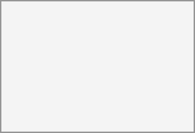

After you log out and log in again, you will see a prompt to enter the

If the code was correct you will be redirected to your
Since the code is time-based, it is important that your server's and your smartphone's clock are almost in sync. A time drift of a few seconds won't be a problem.